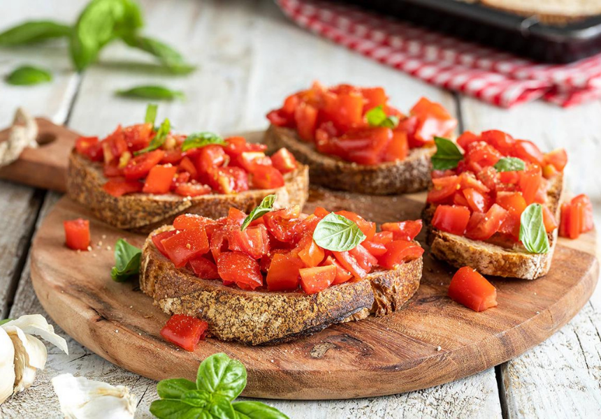

Tomato Bruschetta

Description
Bruschetta al pomodoro is a simple and tasty appetizer, perfect for starting a meal or a quick snack.
Ingredients
- 4 slices of rustic bread
- 3 ripe tomatoes
- 1 garlic clove
- 4 tablespoons extra virgin olive oil
- Fresh basil
- Salt and pepper to taste
Steps
- Toast the bread slices on a grill or in a toaster until golden and crispy.
- Dice the tomatoes and place them in a bowl.
- Season the tomatoes with olive oil, salt, pepper, and some torn basil leaves.
- Rub the garlic clove on the toasted bread slices for added flavor.
- Spoon the seasoned tomatoes onto the toasted bread.
- Drizzle with olive oil and, if desired, a sprinkle of freshly ground black pepper.